Hozd egyensúlyba, amit eszel, azzal, ahogyan mozogsz.
A Bodyscope számolja a lépéseidet, rögzíti a sétáidat és futásaidat, naplózza az étkezéseidet, és megmutatja minden nap energiamérlegét: amit bevittél, szemben azzal, amit elégettél. Minden a telefonodon marad.
Android 6.0 vagy újabb · Nincs fiók · Nincs reklám · Nincs követés
Bepillantás
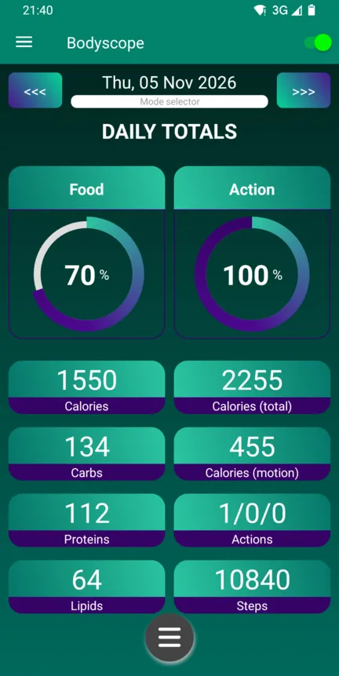
Napi összesítés: étkezés balra, mozgás jobbra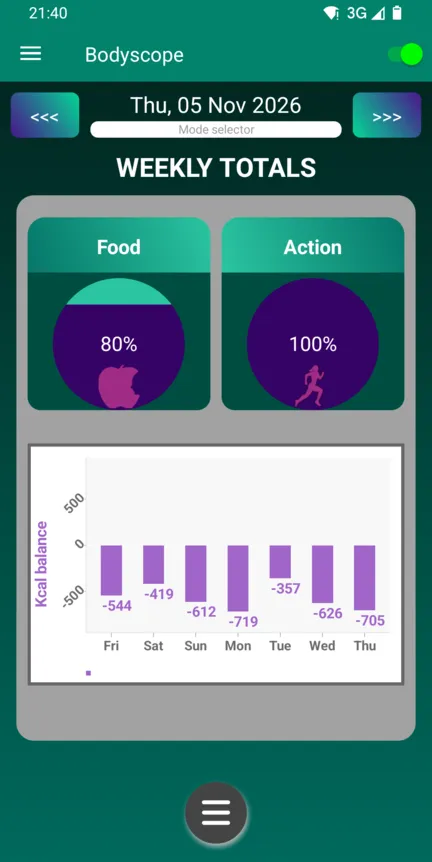
Heti összesítés és minden nap mérlege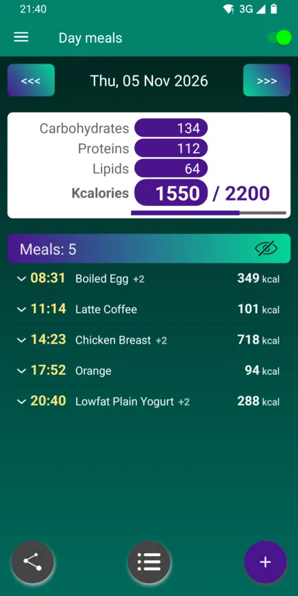
A nap étkezései tápanyagokkal és kcal-lal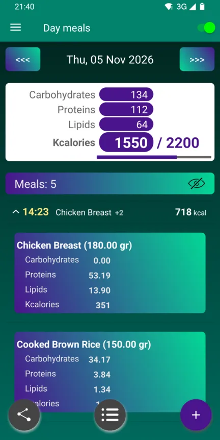
Egy étkezés minden étele részletesen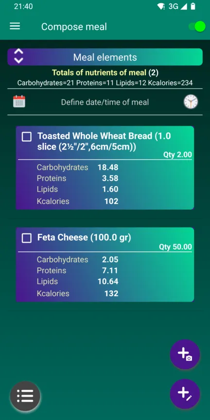
Étkezés összeállítása ételekből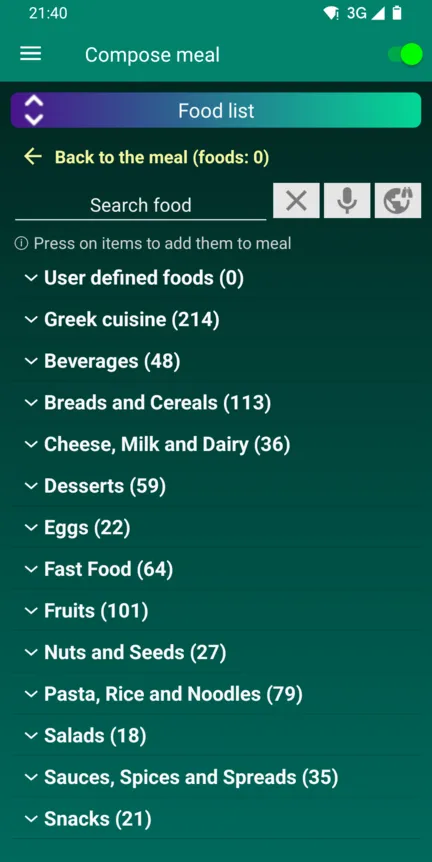
Több mint 1200 étel, kategóriánként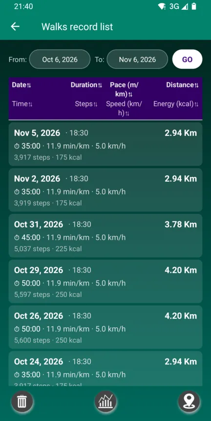
Sétáid tempóval, lépésekkel és kcal-lal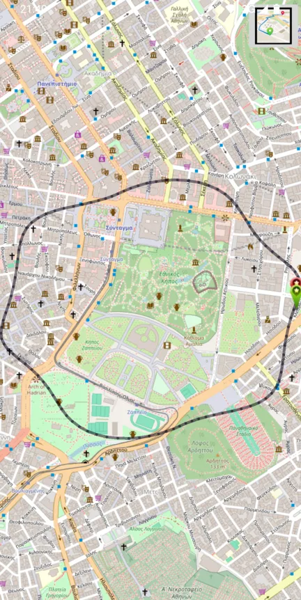
Minden séta útvonala a térképen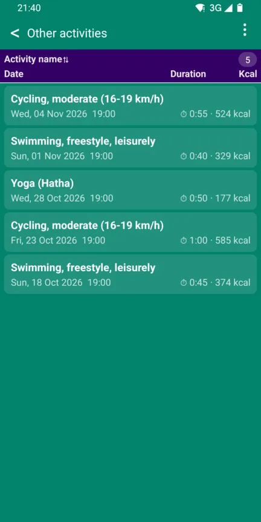
Úszás, kerékpározás, jóga és más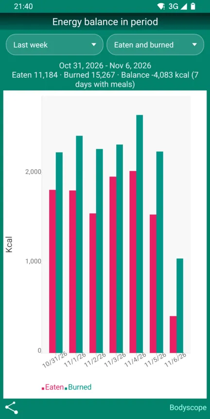
Elfogyasztott (piros) és elégetett (zöld), napról napra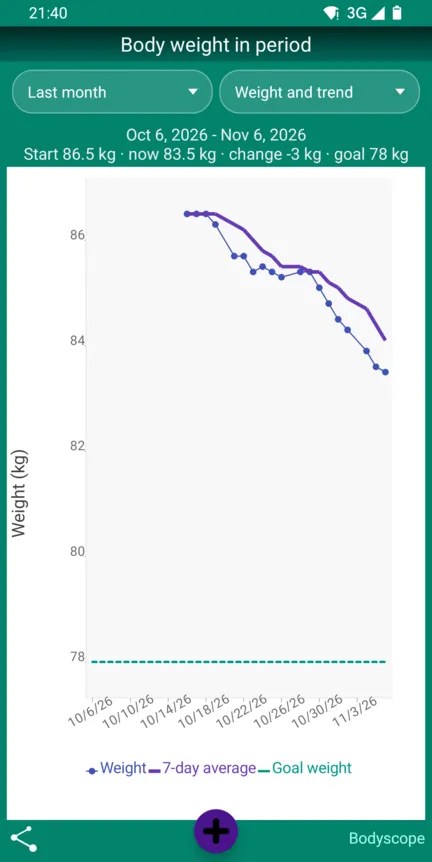
A testsúly, 7 napos átlaga és a célod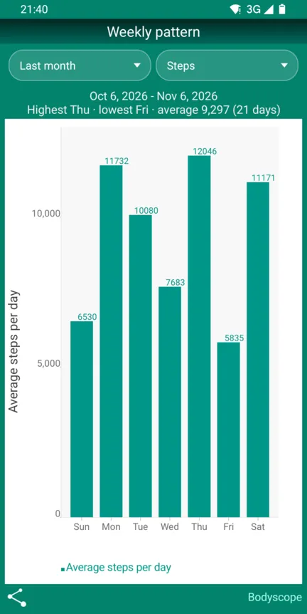
A heted mintázata: lépések, elfogyasztott kcal vagy mérleg
Minden egy kiegyensúlyozott naphoz
Az étel az egyik oldalon, a mozgás a másikon, középen pedig a saját profilod, hogy a számok rád szabottak legyenek, ne egy átlagemberre.
Étkezések és ételek
Állítsd össze étkezéseidet egy kb. 1200 ételt tartalmazó kezdőlistából, vagy keress az USDA és az Open Food Facts adatbázisaiban. A kalóriákat és tápanyagokat összeadja helyetted. Vagy fotózd le a tányérodat, és Claude AI felismeri az ételeket, vagy mentsd el az egész tányért új ételként (saját kulcs szükséges).
Lépésszámláló
Egész nap a háttérben számolja a lépéseidet, napi lépéscéllal és saját lépéshosszal sétához és futáshoz.
Séták és futások
Rögzíts egy sétát vagy futást távolsággal, idővel és tempóval, nézd meg az útvonalat OpenStreetMap-térképen, és kapj hangos visszajelzést útközben.
Egyéb tevékenységek
Naplózz kerékpározást, úszást, súlyzós edzést, jógát, kertészkedést és még sok mást. Mindegyik energiáját a testsúlyodból és a tevékenység intenzitásából számolja.
A napi mérleged
Bevitt kalória a leadott ellen, az alapszükségletedből, lépésekből, futásokból és tevékenységekből. Adj meg egy célsúlyt, és nézd meg, napi hány kalória visz el oda.
Grafikonok és előzmények
Tekints vissza napokra és hetekre: napi étkezések, tápanyagok egy időszakban, valamint sétáid és futásaid előzményei.
Kalkulátorok
BMI-kalkulátor és kalóriakalkulátor, amelyek az életkorodat, nemedet, magasságodat, testsúlyodat és aktivitásodat használják.
Mentések a te kezedben
Mentsd az adataidat egy általad választott mappába, kézzel vagy automatikusan naponta, háromnaponta vagy hetente, és állítsd vissza őket egy új telefonon.
19 nyelv, 6 téma
Használd a Bodyscope-ot a saját nyelveden, és válaszd ki a kedvenc színeidet, a világostól a sötét „holdfény” témáig.
Hogyan működik
Három dolgot kell beállítani, utána a Bodyscope vezeti helyetted a nap számait.
Mesélj magadról
Add meg a születési dátumodat, nemedet, magasságodat és testsúlyodat. A Bodyscope kiszámolja, mennyi energiára van szüksége a testednek nyugalomban.
Naplózd, amit eszel
Add hozzá minden étkezésedet az ételek listájából, vagy keress egy ételadatbázisban, ha valami hiányzik.
Csak mozogj
Kapcsold be egyszer a lépésszámlálást, és egész nap számolja a lépéseidet. Indíts egy sétát vagy futást, vagy naplózz más tevékenységet, és nézd meg a napi mérlegedet.
Az adataid a telefonodon maradnak
A Bodyscope a készülékeden működik. Nem kell fiókot létrehozni, és semmi rejtett nem küldi a profilodat, étkezéseidet vagy tevékenységeidet szerverre.
-
Nincs fiók, nincs bejelentkezésTelepítsd és kezdd el. Nincs mit regisztrálni.
-
Nincs reklám, nincs követésNincs reklám- vagy analitikai kód az alkalmazásban.
-
Csak a keresésed vagy a fotód hagyja el a telefontHa online ételadatbázisban keresel, csak a keresőszavak jutnak el ahhoz a szolgáltatáshoz. Egy étkezésfotó, amelyet elemeztetni szeretnél, a saját kulcsoddal az Anthropichoz kerül.
-
A mentések oda kerülnek, ahová szeretnédEgy mappába a telefonodon, SD-kártyára vagy a saját felhőmappádba.
Kérdések
Amelyeket a leggyakrabban hallunk.
Kerül valamibe a Bodyscope?
Nem. A Bodyscope ingyenes, reklámok és alkalmazáson belüli vásárlások nélkül.
Milyen telefonokon fut?
Bármely Android-telefonon, amelyen Android 6.0 (Marshmallow) vagy újabb fut.
Hogyan telepíthetem erről az oldalról?
Töltsd le az APK-fájlt a lenti gombbal, és nyisd meg a telefonodon. Első alkalommal az Android engedélyt kér az alkalmazások telepítésére a böngészőből vagy a fájlkezelőből. A Bodyscope maga keresi az új verziókat (Névjegy → Frissítések keresése).
Hogyan viszem át az adataimat egy új telefonra?
Használd a menü Adatok biztonsági mentése pontját (vagy kapcsold be az automatikus mentést a Beállításokban), másold át a fájlokat az új telefonra, és ott használd az Adatok visszaállítása pontot.
Néhány szó angolul van, nem az én nyelvemen. Miért?
Lehet, hogy a nyelved még nincs teljesen lefordítva. A legtöbb fordítás először automatikusan készült, így néhány hibás is lehet. Örülünk a segítségednek: írj nekünk.
Javasolhatok funkciót, vagy jelezhetek hibát?
Kérjük. Írj a bodyscope.team@gmail.com címre, vagy használd az alkalmazásban a Névjegy → E-mail a szerzőnek pontot. Minden üzenetet elolvasunk.
Hogyan adhatok hozzá új élelmiszert?
Két módja van. Mindkét esetben az élelmiszer bekerül az élelmiszerfájlba, és minden étkezéshez használható.
A képernyőképek angolra állított alkalmazással készültek. A saját nyelveden a menük és az ételek nevei magyarul jelennek meg.
1. Közvetlenül, az élelmiszerfájlban
- Nyissa meg a menüt (☰), és a(z) Fájlkezelés alatt koppintson a(z) Ételek pontra.
- Koppintson a jobb felső ⋮ ikonra, és válassza a(z) Rekord hozzáadása lehetőséget.
- Adja meg az élelmiszer nevét, egy mennyiséget és annak mértékegységét (például 100 gr vagy 1 szelet), valamint ennek a mennyiségnek a szénhidrát-, fehérje-, zsír- és kalóriatartalmát. Koppintson a(z) Elfogadás gombra.


2. Étkezés összeállítása közben: összetett élelmiszer
- A(z) Napi étkezések képernyőn koppintson a jobb alsó gombra, és válassza a(z) Részletes étkezés hozzáadása lehetőséget.
- Koppintson a + gombra, és adja hozzá az összetevőket, mindegyiket a mennyiségével.
- Jelölje be az élelmiszer összetevőit, koppintson a bal alsó menügombra, és válassza a(z) Összetett étel a kijelöltekből lehetőséget.
- Adjon nevet az élelmiszernek, és koppintson a(z) Elfogadás gombra. Az étkezésben az összetevők helyére az új élelmiszer kerül, amely az élelmiszerfájlba is bekerül.


Hogyan működik az „Étkezés fotóról” és az „Új étel fotóról”?
A Bodyscope egy fotóról felismeri a tányérján lévő ételeket a Claude, az Anthropic mesterséges intelligenciája segítségével. Ez nem kötelező, és saját Anthropic API-kulcsot igényel. A felismert ételeket hozzáadhatja egy étkezéshez, vagy az egész tányért egyetlen új ételként mentheti az ételek fájljába.
Használat
- A(z) Napi étkezések képernyőn koppintson a jobb alsó gombra, és válassza a(z) Részletes étkezés hozzáadása lehetőséget.
- Koppintson a + és kamera jelű gombra (Étkezés fotóról), és válassza a Fotó készítése vagy a Választás a galériából lehetőséget.
- Claude felsorolja a látott ételeket becsült tömeggel és kalóriával. Vegye ki a pipát a hibásak elől, és koppintson a Hozzáadás az étkezéshez gombra.
- Koppintson egy ételre az étkezésben a mennyisége javításához, majd mentse az étkezést a szokásos módon.
Tányér mentése új ételként
- Nyissa meg a menüt (☰), lépjen a Fájlkezelés › Ételek pontra, koppintson a keresés melletti kamera gombra (Új étel fotóról), és készítsen vagy válasszon egy fotót.
- Vegye ki a pipát a hibásak elől, és koppintson a Tovább gombra.
- Válassza az Egy adag (az egész tányér, például kb. 700 g) vagy a 100 g-onként lehetőséget.
- Ellenőrizze a nevet, a mennyiséget, a mértékegységet és az értékeket, majd koppintson az Elfogadás gombra. A mennyiség módosításakor az értékek arányosan változnak; ha csak a mennyiséget akarja módosítani, vegye ki a pipát az Értékek arányos módosítása elől.
- A tányér mostantól ugyanolyan étel, mint a többi: új fotó és újabb költség nélkül adhatja hozzá az étkezéseihez.
Kulcs beszerzése
- Hozzon létre fiókot a console.anthropic.com oldalon, és vásároljon egy kis egyenleget.
- Hozzon létre egy API-kulcsot, és másolja ki.
- A Bodyscope-ban nyissa meg a menüt (☰), lépjen a Beállítások › Ételbeállítások pontra, koppintson Az Ön Claude API-kulcsa elemre, és illessze be.
Költség és adatvédelem
Az Anthropic minden fotót az Ön kulcsára terhel: a jelenlegi árakon fotónként kb. 0,001–0,002 USD, vagyis 100 fotó nagyjából 10–20 centbe kerül. Az egyenleget előre kell megvenni, kb. 5 USD-tól. Maga a Bodyscope semmibe sem kerül.
A fotó a telefonjáról közvetlenül az Anthropichoz kerül, és csak akkor, ha ezt a funkciót használja; nincs közbeiktatott Bodyscope-szerver. A kulcs az alkalmazás beállításaiban van, amelyek a biztonsági mentésekbe is bekerülnek, ezért ezeket tartsa bizalmasan.
Szerezd be a Bodyscope-ot
Ingyenes Androidra. Töltsd le, nyisd meg a fájlt a telefonodon, és kész.
APK letöltése